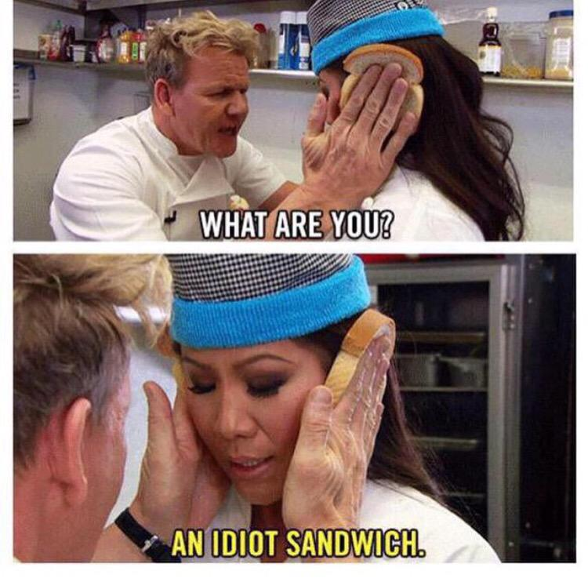

Idiot sandwich

Description
My personal favourite sandwich,
I definitely make it a few times a day.
Originally made by Gordon Ramsey.
I would say it's a creative, harsh but
effective way to poke fun at someone.
The first ever recipe in this book.
Ingredients
- Two slices of bread, preferrably white
- A person
Steps
- Do something that would make others think
that you're not the brightest person in the room. Alternatively find someone like that.
- Put one slice of bread on the left (face) cheek.
- Put the other slice of bread on the right cheek.
- You've made an Idiot sandwich!
Back to book